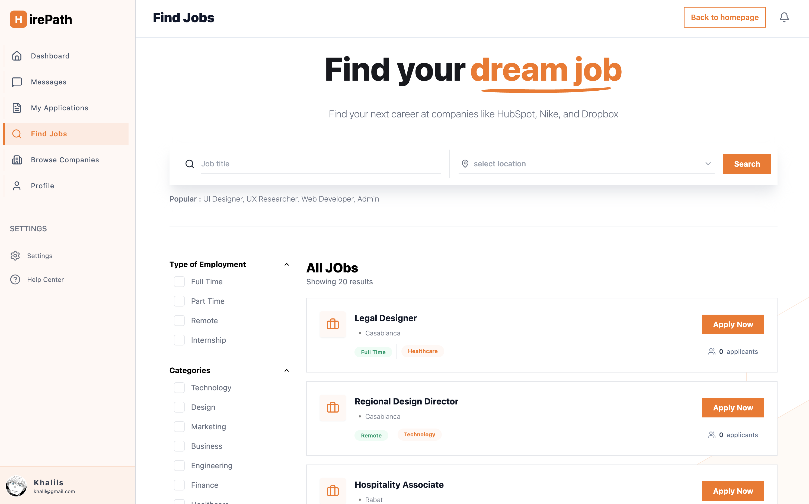

HirePath
A team project for job listings, applications, and professional networking. I worked on company profiles, onboarding, and the company dashboard.
React, NestJS, Spring Boot, PostgreSQL
View repository
I’m a software engineering student at 1337 Khouribga. I work on backend projects and write C and C++ programs to learn how Linux systems work.
A team project for job listings, applications, and professional networking. I worked on company profiles, onboarding, and the company dashboard.
React, NestJS, Spring Boot, PostgreSQL
View repository
A Docker Compose setup that serves WordPress over HTTPS with NGINX and stores data in MariaDB.
Docker Compose, NGINX, MariaDB
A small Unix shell that runs commands, connects pipelines, and handles redirection and environment variables.
C, POSIX, GNU Readline
A raycaster that turns a 2D map into a first-person view with textured walls.
C, MiniLibX
I’m currently learning Java and Spring Boot. My coursework at 1337 and ALX has covered networking, concurrency, and how services fit together.
Connect on LinkedIn